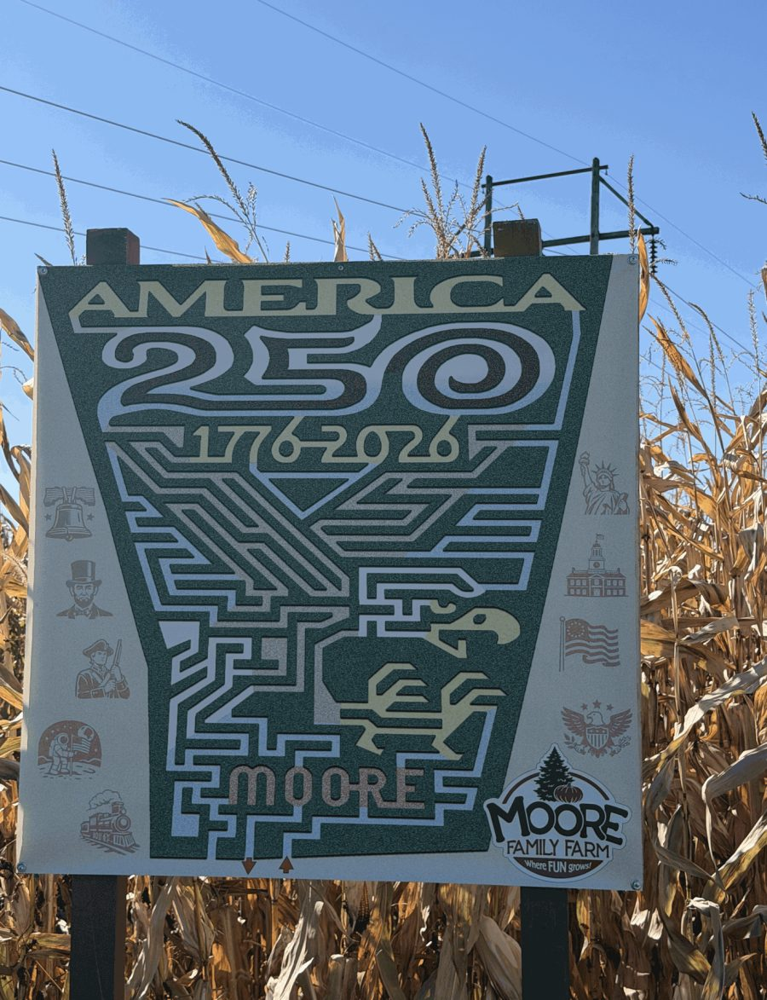
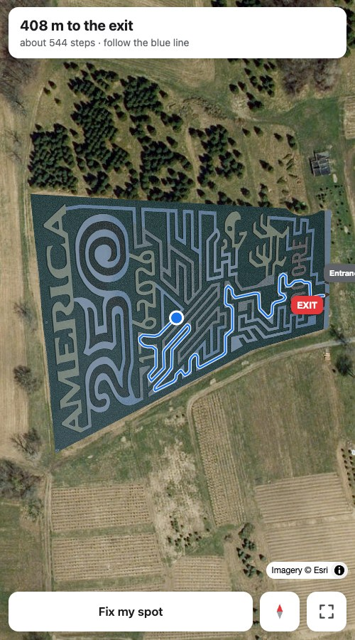

MaizeKit
Turn a photo of a corn maze map into a phone app that shows where you are and the way out.
How it works
Most corn mazes post a map on a sign at the entrance. MaizeKit takes a photo of that map, lines it up with the field on satellite imagery, and turns it into a page that shows your GPS position on the maze and draws the way out.


What it does
- Shows a blue dot for where you are, from the phone's GPS.
- Draws the way to the exit along the real paths, from wherever you're standing, with the distance.
- Lets you tap Fix my spot when GPS puts you a row off.
- Holds the route steady instead of jumping between rows as GPS wobbles.
- Keeps your location on your phone. There's no server and nothing is stored.
- Prints an entrance sign with a QR code for the farm's own address.
Making one for your maze
Each maze is one folder in the MaizeKit repository:
a photo of the maze map and a short file describing it. Add one, and the maze gets its own page at
maizekit.github.io/m/your-farm/ plus a printable entrance sign with a QR code.
The getting started guide walks through it. It's free, and it runs as plain files on GitHub Pages.
Examples
Moore Family Farm, Groton, NY, 2026.
Built by MaizeKit from the map each farm posts publicly. The farms aren't affiliated with MaizeKit and haven't endorsed these pages. Run one of these mazes and want it changed or taken down? Let us know.
Built one? Add the badge to your README: